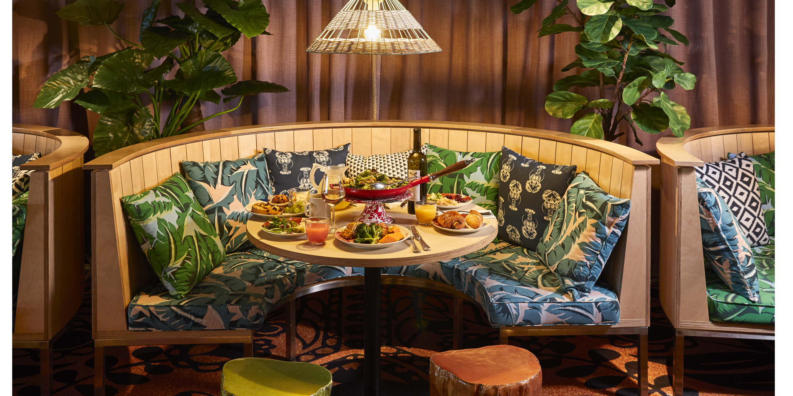

Box 100% saines pour animaux à choisir ou à composer
2021.04.07 15:01
0,00 € Panier Menu La box du moment Je crée ma box Abonnement La boutique Les chiens Box pour chiot L’alimentation quotidienne Les friandises pour chien Les jouets pour chien Les accessoires pour chien Hygiène & santé Les chats Box pour chaton L’alimentation quotidienne Les friandises pour chat Les jouets pour chat Hygiène & santé Les accessoires pour chat Les nacs Les box pour nacs Lapin Cochon d’Inde Rat Furet Chinchilla Octodon Hamster Souris Gerbille Unboxing Nos marques La box du moment Je crée ma box Abonnement La boutique Les chiens Box pour chiot L’alimentation quotidienne Les friandises pour chien Les jouets pour chien Les accessoires pour chien Hygiène & santé Les chats Box pour chaton L’alimentation quotidienne Les friandises pour chat Les jouets pour chat Hygiène & santé Les accessoires pour chat Les nacs Les box pour nacs Lapin Cochon d’Inde Rat Furet Chinchilla Octodon Hamster Souris Gerbille Unboxing Nos marques Menu La box du moment Je crée ma box Abonnement La boutique Les chiens Box pour chiot L’alimentation quotidienne Les friandises pour chien Les jouets pour chien Les accessoires pour chien Hygiène & santé Les chats Box pour chaton L’alimentation quotidienne Les friandises pour chat Les jouets pour chat Hygiène & santé Les accessoires pour chat Les nacs Les box pour nacs Lapin Cochon d’Inde Rat Furet Chinchilla Octodon Hamster Souris Gerbille Unboxing Nos marques 0,00 € Panier
Accueil
Je découvre la mini box du moment Je découvre la sélection du moment Je découvre la mini box du momentJe crée ma box pour chien ou ma box pour chat selon la sélection du moment !
Je profite de produits naturels pour chiens , chats et nacs disponibles à l’année sur la boutique en ligne !
Je choisis une box de saison ou je crée ma box pour lapin , cochon d’Inde, rat
La sélection du moment est sur le thème des couleurs pastels 🌼
Rupture de stockBad Cuz | Caoutchouc naturel
5,00 € – 6,00 € Choix des optionsBouchées de bœuf et poulet
4,90 € Ajouter au panier Rupture de stockFilet de maquereau grillé
2,30 € Lire la suite Rupture de stockFilet de poulet grillé
2,30 € Lire la suiteJouet pour chat Avocatos
7,95 € Ajouter au panierLamelles de viande séchée (5 parfums)
4,90 € Choix des optionsComment créer ma box ?
C’est très simple ! Il me suffit de sélectionner les produits qui me plaisent sur la boutique en ligne et dans la sélection du moment. Je les mets dans mon panier et je passe ma commande pour recevoir une box personnalisée au prénom de mon poilu !
Cela me permet de maîtriser mon budget, de l’adapter aux besoins de mon chien ou de mon chat et surtout d’avoir des produits sains et gourmands !
Les produits pour chien Les produits pour chat Les box pour nacsQu'est ce que La Box Naturelle ?
Plaisir et gourmandise tout en faisant attention à la composition
Un vrai réseau d’artisans et de marques qui ont à cœur la bonne santé de vos animaux !
Une sélection rigoureuse faite tous les mois juste pour vous
Créée en 2016, La Box Naturelle s’inscrit dans une démarche de sensibilisation : si vous faites attention à ce que vous mangez, faites vous attention à ce que votre meilleur ami mange ?
La Box Naturelle a été la première box en France sans engagement mensuel et uniquement avec des produits sains pour vos chats, chiens et nouveaux animaux de compagnie !
Découvrez des sélections régulières et thématiques de produits sains afin de composer vous même votre commande selon vos besoins et votre budget !
Au programme : du 100% naturel ! Des friandises sans sous-produits, artisanales et le plus possible Made in France. Des jouets en matières naturelles et recyclées qui ne libèrent pas de matières toxiques lorsque l’on joue avec avec et des produits d’hygiène respectueux de la peau de nos poilus !
[Colette, Tao et Lilith créateurs et testeurs de La Box Naturelle] Nos engagements Trustpilot
Une question sur un produit ?
hello@la-box-naturelle.frSuivez-nous :
Facebook Instagram Youtube Blog Nos engagements Mentions légales CGV Politique de confidentialitéRecevez en avant première les dernières nouveautés
© All rights reserved, La Box Naturelle
